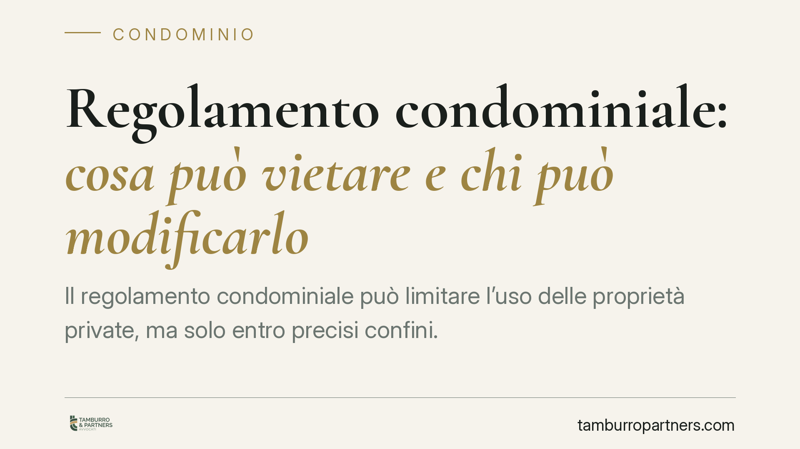

Regolamento condominiale: cosa può vietare e chi può modificarlo
Il regolamento condominiale può limitare l'uso delle proprietà private, ma solo entro precisi confini. La giurisprudenza più recente ha chiarito quando un divieto è davvero vincolante, come si modifica e se è opponibile a chi compra dopo. Distinguere tra clausole regolamentari e contrattuali è decisivo: cambia la maggioranza richiesta e la stessa validità del vincolo.

Il fatto e perché conta
Non tutti i divieti contenuti in un regolamento condominiale hanno lo stesso peso. Alcuni limitano l'uso delle parti comuni e si modificano con una delibera a maggioranza; altri incidono direttamente sulla proprietà esclusiva di ciascun condomino e richiedono il consenso unanime o, meglio, un titolo contrattuale.
La rassegna giurisprudenziale 2025-2026 (Cassazione Civile, Corte d'Appello di Roma, Tribunali di Milano e Latina) ha ribadito questa distinzione proprio sui temi più caldi: divieto di adibire l'appartamento a B&B o affittacamere e natura del cosiddetto "uso esclusivo" su cortili, lastrici e androni.
Inquadramento normativo
La linea di confine passa tra due tipi di clausole. Le clausole regolamentari disciplinano l'uso e il godimento delle parti comuni (art. 1102 cod. civ.) e si approvano o modificano con le maggioranze assembleari ordinarie. Le clausole contrattuali, invece, comprimono i diritti dei singoli sulle proprietà esclusive o attribuiscono vantaggi a determinate unità: nascono solo dal consenso di tutti i condomini o da un atto di origine (ad esempio il regolamento predisposto dal costruttore e richiamato nei singoli rogiti).
L'interpretazione segue i canoni generali sui contratti: l'art. 1362 cod. civ. impone di ricostruire la comune intenzione delle parti al di là del tenore letterale, mentre l'art. 1367 cod. civ. (conservazione) induce a preferire il significato che mantiene la clausola valida ed efficace. Attenzione, poi, alla qualificazione del diritto d'uso esclusivo: la Cassazione lo ha distinto dai diritti reali tipizzati (usufrutto, uso e abitazione, artt. 1021 e 1024 cod. civ.), negando che le parti possano creare liberamente diritti reali atipici su parti comuni. Spesso quel "diritto" è, in realtà, una modalità di uso più intenso ex art. 1102 cod. civ.
Implicazioni pratiche
La distinzione non è teorica. Un divieto di destinare l'appartamento a B&B è valido solo se contenuto in una clausola di natura contrattuale, formulata in modo chiaro ed espresso: i giudici richiedono una previsione specifica, non ricavabile per via interpretativa da un generico divieto di attività rumorose o commerciali. Un divieto ambiguo tende a essere interpretato in senso favorevole alla libertà di godimento della proprietà.
Sul fronte dell'opponibilità ai nuovi acquirenti, le clausole contrattuali vincolano chi compra successivamente solo a precise condizioni: richiamo espresso nell'atto di acquisto, oppure trascrizione del regolamento (o della singola clausola) nei registri immobiliari. In assenza di richiamo e di trascrizione, il nuovo proprietario può legittimamente contestare il vincolo che limita la sua proprietà.
Quanto all'uso esclusivo, chi ha acquistato confidando in un box, cortiletto o terrazzo "di proprietà esclusiva" deve verificare come quel diritto sia stato costruito nel titolo. Se si tratta di una clausola che pretende di creare un diritto reale atipico, può essere riqualificata dal giudice, con conseguenze rilevanti sulla trasferibilità e sulla tutela del godimento.
Cosa fare in concreto
- Verificate la natura della clausola: controllate se il divieto che vi interessa è regolamentare o contrattuale, perché da questo dipende la maggioranza necessaria per introdurlo o modificarlo.
- Controllate il vostro rogito: accertate che il regolamento sia richiamato nell'atto di acquisto e, se contiene clausole contrattuali, che risulti trascritto. Senza richiamo né trascrizione, l'opponibilità è dubbia.
- Pretendete divieti espressi: per limitare destinazioni come B&B o affittacamere, formulate clausole specifiche e inequivoche; i divieti generici raramente reggono in giudizio.
- Riqualificate l'uso esclusivo: se nel titolo compare un "uso esclusivo" su parti comuni, fatelo esaminare per capire se configura un diritto valido o un vincolo a rischio di nullità.
- Portate la modifica in assemblea con il quorum corretto: una delibera assunta con maggioranza insufficiente per una clausola contrattuale è impugnabile e inefficace.
In un contesto in cui gli affitti brevi e la contesa sugli spazi comuni alimentano il contenzioso, consigliamo di non affidarsi al solo testo del regolamento: la qualificazione giuridica delle clausole, caso per caso, è ciò che ne determina la reale efficacia.
---
*Contributo informativo a cura di Tamburro & Partners - Avv. Giuseppe Tamburro. Non costituisce parere legale.*
Ogni condominio ha una storia a sé.
Se gestisci un'amministrazione e vuoi un confronto su una specifica questione condominiale, scrivi allo studio. Ti rispondiamo entro un giorno lavorativo.